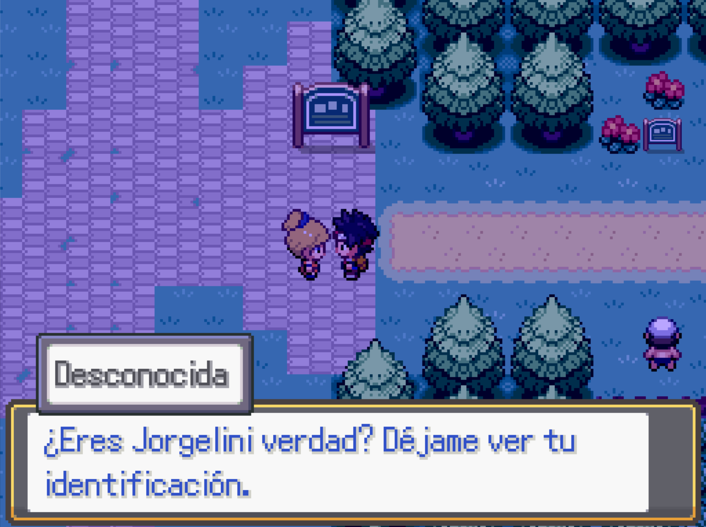
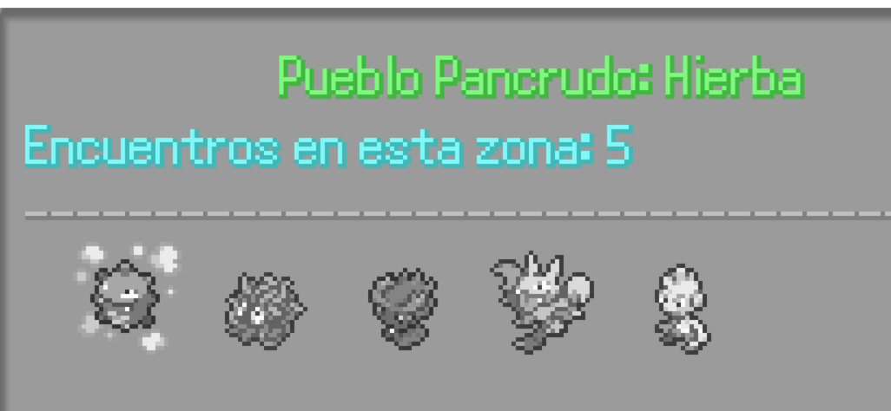
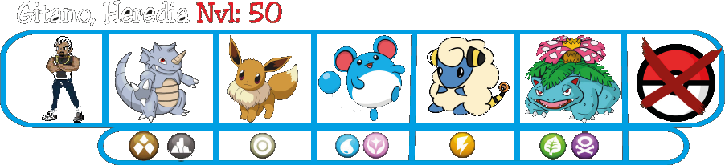
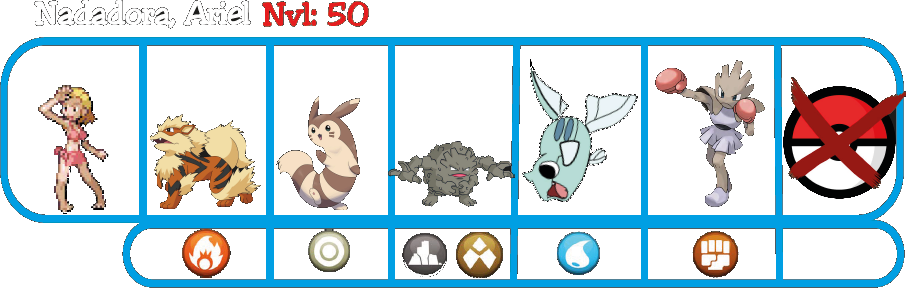
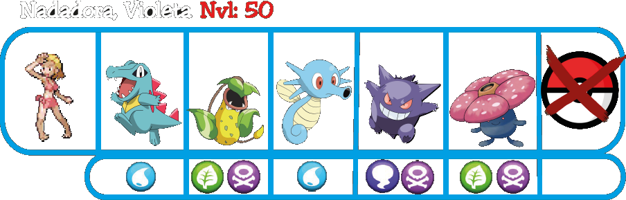
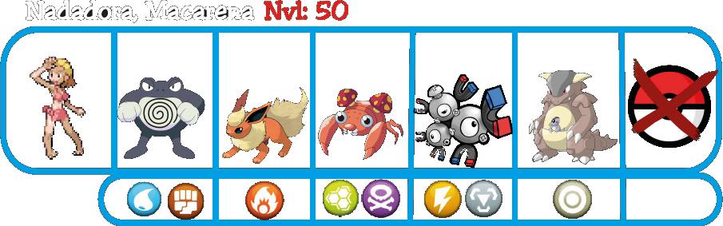

Pueblo Pancrudo
Después de derrotarlos llegarás a Pueblo Pancrudo. Nada más llegar verás que hay alguien esperándote y te entregará una carta.
La carta es entregada de parte de tu hermano, Peyin. Te contará que ha estado atento a tus avances y que está orgulloso de que hayas conseguido varias medallas, en el sobre encontrarás un objeto valioso llamado Mega Anillo. Es gracias a lo que se convirtió en el campeón hace 10 años.
Después de leer la carta, tus Pokemoitos subirán su nivel límite al 50 y será un buen momento para dar unos pasos atrás antes de seguir, empezando por ir al Parque Hierbajos.
Pueblo Pancrudo (Segunda visita)
En el noreste del pueblo se encuentra la guardería, en la que desapareció el cuidador. En la puerta habrá un gitano que te dirá que te vayas, si insistes llamará a sus primos y luchareis.
Después de derrotarlo te contará que les pagaron para llevar al viejo hasta Pueblo Torrijas, además de vigilar la guardería porque dentro hay algo que deben recoger más tarde. Asegurará que no sabe nada más y te abrirá el paso hacia la guarderia, donde encontrarás una nota en la mesa, que te ayudará encontrar al Pokemoito de nivel Mítico llamado Nekito.
En este pueblo encontrarás unas cuantas misiones secundarias que tienen mucha importancia, encontrarás dos de ellas en la Tienda Urahara y una más en la Casa del Pescador.
Después de completar las misiones de Urahara y el Pescador, es el momento de enfrentarte al Gimnasio Pancrudo.
Gimnasio Pancrudo
En este gimnasio no habrá que hacer nada en especial, simplemente avanza derrotando a los enemigos para crear los puentes hasta llegar al líder.
  Después de derrotar al líder, conseguirás la cuarta medalla y además la habilidad de caminar sobre el agua.
Explora todo lo que quieras del pueblo, y si te apetece retrocede en busca de objetos en el agua que has pasado por alto en otras rutas, cuando estés listo sigue avanzando hasta la Autopista.